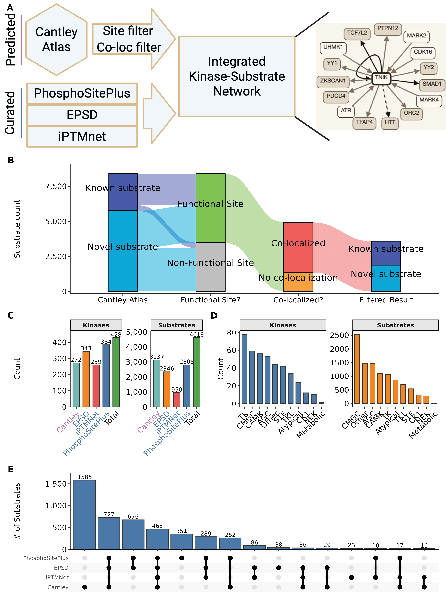
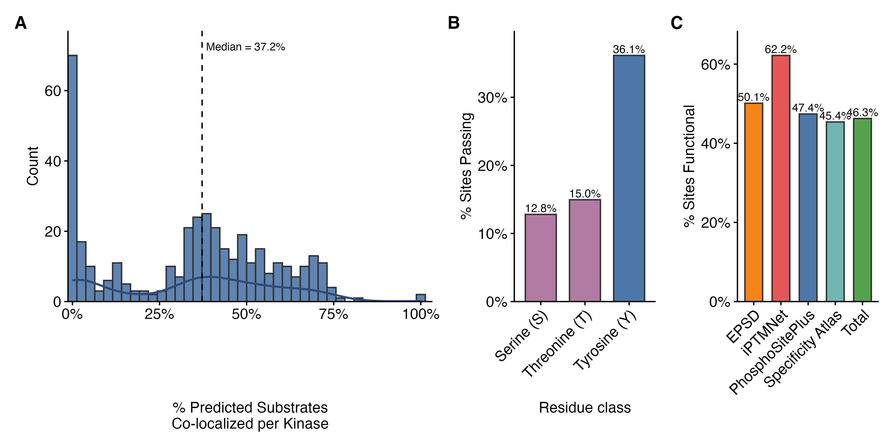
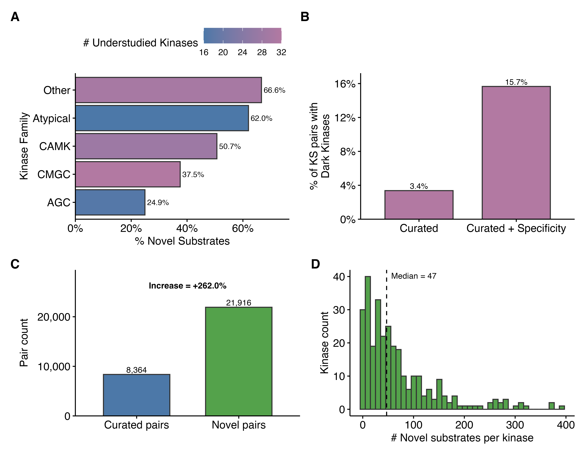
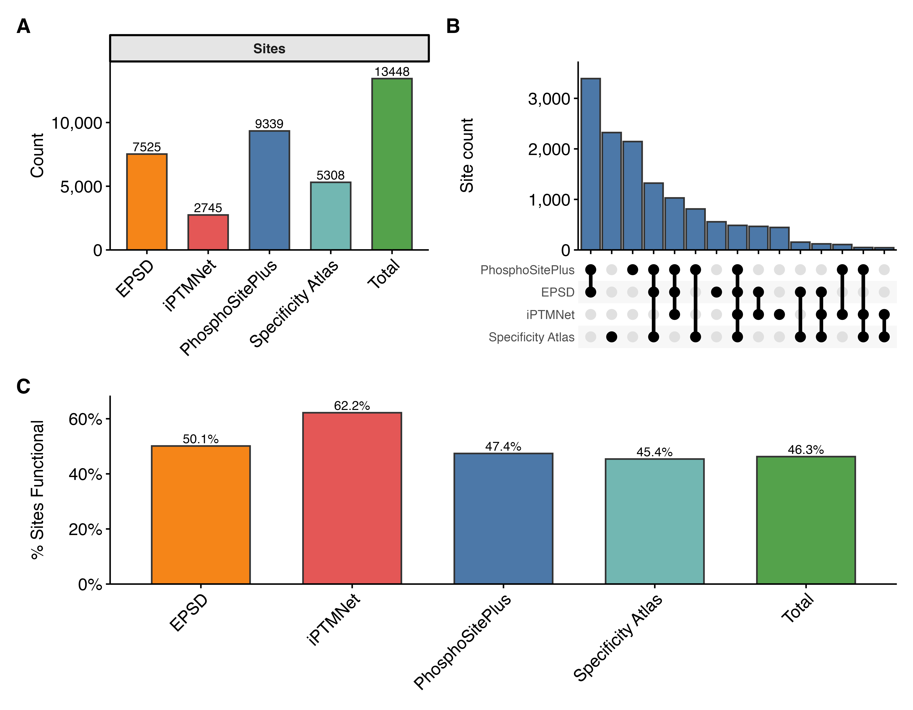

KinaseCanvas: An Integrated Resource for Curated and Novel Kinase-Substrate Interactions
Abstract
Protein phosphorylation is a cornerstone of human physiology, regulating pathways critical for development, metabolism, and disease. While curated databases like PhosphoSitePlus and iPTMnet provide high-confidence kinase-substrate interactions (KSIs), they remain biased toward well-studied signaling nodes, leaving the vast majority of the “dark” kinome unconnected. Recent specificity atlases have begun to fill this gap by profiling motif specificities for nearly all human kinases, yet these raw predictions are often too dense and noisy for direct biological interpretation. Here, we present KinaseCanvas, an integrated resource that places these cutting-edge motif predictions within the context of high-confidence curated data. By applying stringent biological filters for subcellular co-localization and phosphosite functional importance, we distill millions of raw predictions into over 13,000 high-confidence novel interactions. This integration more than triples the coverage of understudied kinases and provides a context-aware framework for hypothesis generation, illuminating poorly characterized regions of the human kinome.
Database URL: https://cujoisa.github.io/KinaseCanvas/
Introduction
Protein phosphorylation is a pervasive regulatory mechanism that controls virtually every major cellular process. It has been estimated that roughly one-third of all eukaryotic proteins are phosphorylated in at least one cellular context, and that the human proteome may harbor on the order of \(10^4-10^5\) distinct phosphosites (1,2). Mapping which phosphorylation enzyme (kinase) modifies which protein (substrate) is therefore essential for understanding signal transduction, drug response and disease mechanisms, but this map remains far from complete. Over the past two decades, substantial effort has been put into building reference resources for kinase-substrate interactions (KSIs). Databases such as PhosphoSitePlus, EPSD and iPTMnet curate experimentally observed phosphosites and, where possible, annotate the upstream kinases based on low-throughput biochemistry, targeted phosphoproteomics and manual literature curation (3–5). Additional resources including Phospho.ELM, PhosphoNetworks and SIGNOR provide complementary KSI annotations derived from both focused and high-throughput studies (6–8). However, these curated datasets are heavily skewed towards a small subset of well-studied kinases, substrates and pathways, leaving large regions of the human kinome (including understudied “dark” kinases) sparsely connected or completely unmapped (9).
In parallel, unbiased experimental and computational approaches have recently produced near-comprehensive “specificity atlases” for the human kinome. Using peptide-library based specificity profiling, Johnson et al. systematically determined optimal substrate motifs for most human serine/threonine kinases and used these motifs to score all known human phosphosites (10). More recently, Yaron-Barir et al. generated an analogous atlas for the human tyrosine kinome (11). Together, these resources greatly expand the theoretical kinase-phosphosite search space: for each phosphosite, nearly all known kinases receive a motif-based compatibility score, yielding tens of millions of candidate KSIs. While these atlases have already been shown to recover known signalling relationships and highlight kinase dysregulation in disease contexts (10,11), their full potential as a systems-level KSI prior remains underexploited. Current visualization tools, such as the Kinase Library, focus on sequence-level scoring and do not support network-based exploration. Furthermore, while methods like Kinase-Substrate Enrichment Analysis (KSEA) are widely used to infer kinase activity, they typically rely on curated databases or require manual integration of specificity matrices.
Moreover, profiling thousands of phosphosites against hundreds of kinases generates an enormous combinatorial prediction space: most sites have multiple plausible motif matches, and naïve motif scanning across the phosphoproteome leads to high false-positive rates and spurious kinase-substrate couplings (12,13). A major challenge is therefore that motif-based scores alone do not ensure that a kinase-substrate pair is physically or functionally plausible in vivo. Kinases and substrate pairs must co-localize in the cell, be expressed in the same tissues or conditions, and the modified site itself must be known or predicted to have some functional consequence. To address this, recent studies have demonstrated the value of integrating orthogonal data layers. In particular, Ochoa et al. developed a machine-learning approach that aggregates features ranging from evolutionary conservation and structural constraints to regulation across thousands of phosphoproteomics experiments. Their functional score effectively discriminates regulatory sites from non-functional ‘noise,’ substantially improving the biological interpretability of phosphoproteomic datasets (14,15). When combined with orthogonal constraints such as subcellular localization, these functional indicators could provide a powerful filter for identifying physiologically relevant kinase–substrate relationships.
Here, we build on these advances to construct an integrated resource of human kinase-substrate relationships that combines literature-curated KSIs with motif-based predictions from the serine/threonine and tyrosine kinome specificity atlases. We apply a set of simple but stringent biological filters based on (i) motif rank, (ii) subcellular co-localization using the Human Protein Atlas Cell Atlas, and (iii) a data-driven phosphosite functional score (10,14,16,17). An overview of the data integration and filtering strategy is shown in Figure 1, including an example TRAF2 and NCK-interacting protein kinase (TNIK)-centred subnetwork. The resulting network is accessible through the KinaseCanvas Explorer, an interactive web application that allows users to query specific kinases or substrates, visualize their local interaction neighbourhoods, and seamlessly filter connections based on curation status or functional evidence. This unified framework enables researchers to distinguish novel from previously reported interactions and to systematically assess coverage of both well-studied and understudied kinases.

Alt text: Workflow diagram showing integration of curated Kinase-Substrate sets with motif predictions, co-localization filters, and functional scores.
Materials and Methods
Curated kinase-substrate interactions
We first assembled a non-redundant reference set of human kinase-substrate-site relationships (“curated KSIs”) from multiple databases. Primary sources included PhosphoSitePlus (PSP), the Eukaryotic Phosphorylation Site Database (EPSD) and iPTMnet, which catalogue experimentally observed phosphosites and often annotate upstream kinases based on low-throughput experiments or kinase assays (3,5,18).
As a starting point, we downloaded the pre-assembled curated KSI table from the KiNet web portal, which aggregates kinase-substrate interactions from PhosphoSitePlus, EPSD and iPTMnet and provides kinase annotations (19). We then re-processed this table to harmonize identifiers and used available site-level functional annotations needed for our analyses. Briefly, we extracted the kinase gene symbol, substrate protein, phosphosite (modified residue and position), source database and/or PMID. Gene and protein identifiers were harmonized by mapping to official HGNC gene symbols and UniProt accessions. When multiple isoforms existed, phosphosites were mapped to the canonical UniProt sequence when possible. Phosphosite notation was standardized to a single-letter residue code plus position (e.g. “S123”). Redundant entries arising from overlap across databases were collapsed, while preserving provenance information (all contributing databases and PMIDs).
Across PhosphoSitePlus, EPSD and iPTMnet we ultimately obtained 15,644 unique phosphosites, with PhosphoSitePlus contributing the largest number (9,340 sites) and EPSD and the Cantley atlas each contributing substantial additional coverage (Supplementary Figure 1). The overlap structure of these site sets, including sites unique to individual resources and those shared across multiple databases, is summarized in Supplementary Figure 1. The resulting curated KSI set serves as a reference baseline for all subsequent analyses, and coverage of kinases and substrates contributed by each source is shown in Figure 1.
Kinome-wide motif-based substrate predictions
To substantially expand beyond known KSIs, we integrated motif-based predictions from the human kinome specificity atlases for serine/threonine and tyrosine kinases. Johnson et al. used position-specific scoring matrices derived from peptide library screens to define optimal substrate motifs for the vast majority of human serine/threonine kinases and subsequently scored all known human phosphosites against each kinase-specific motif (10). These matrix-based approaches have been complemented by more recent deep-learning architectures for phosphorylation site prediction (20). More recently, Yaron-Barir et al. generated an analogous atlas for the human tyrosine kinome (11). We and others collectively refer to these resources as the “Cantley atlas”.
We obtained the per-kinase, per-phosphosite prediction scores from the supplementary materials. For each phosphosite (UniProt accession + position), the atlases provide a quantitative score or percentile rank reflecting how well the local sequence matches the optimal motif for each kinase (10,11). From this prediction matrix, we extracted high-confidence motif-based KSIs using a percentile threshold. Following the original studies, we focused on phosphosite-kinase pairs in which the site ranked within the top 10% of all phosphosites scored for that kinase (≥90th percentile) (10,11). This conservative cutoff retains sites that are strongly preferred by the kinase’s motif and reduces the inclusion of weak, low-specificity matches.
To further mitigate well-known issues with highly promiscuous kinases whose motifs match a large fraction of the phosphoproteome (e.g. CK2), we utilized the provided “promiscuity index” for each scored substrate, defined as the fraction of all phosphosites assigned to the top 10% for a given kinase. Substrates above the median promiscuity were excluded from the motif-based prediction set, as their broad specificity reduces the utility of purely motif-driven assignments. The remaining set of motif-supported KSIs was then passed to contextual filters described below.
Contextual filtering
Subcellular co-localization
Since kinase activity is constrained by spatiotemporal co-localization with substrates, we filtered motif-based KSIs based on subcellular localization. We used the Human Protein Atlas (HPA) Cell Atlas annotations, which provide antibody and imaging-based localization calls for thousands of human proteins across up to 49 subcellular structures (17). For each kinase and substrate, we retrieved all reported compartments with confidence levels of “Supported”, “Approved” or “Enhanced”. For every predicted kinase-substrate pair, we then computed the intersection of kinase and substrate localization sets. Pairs with at least one shared compartment were considered co-localized and retained; pairs with no compartmental overlap were flagged as unlikely to occur in vivo and removed from the high-confidence set. The distribution of the fraction of motif-predicted substrates that co-localize with each kinase is shown in Figure 2; the median kinase retains 45.3% of its predicted substrates after applying this co-localization filter. We note that HPA localizations are neither exhaustive nor condition-specific, so some genuine context-dependent interactions may be lost. However, requiring at least one documented shared localization substantially increases the plausibility of retained KSIs.
Phosphosite functional score
To prioritize phosphosites with higher likelihood of regulatory impact, we integrated the phosphosite functional score developed by Ochoa et al., who re-analysed thousands of phosphoproteomics experiments to build a reference human phosphoproteome and then trained a machine-learning model to predict functional relevance based on 59 features, including evolutionary conservation, structural context, regulation patterns and network properties (14). The resulting score ranges from 0 to 1, with higher values indicating a greater probability that a site is functionally important.
We downloaded the pre-computed human phosphosite functional scores and mapped them to our phosphosite identifiers. For each predicted KSI, we annotated the substrate site with its functional score and designated a site as “likely functional” if its score exceeded 0.5, corresponding approximately to the upper quartile of scores and similar to thresholds used in previous work applying this metric (11,14). As expected, tyrosine sites were markedly enriched for high functional scores compared to serine or threonine sites (70.8% vs. 27.5% and 26.9% above the cutoff, respectively; Figure 2). When stratified by source database, between 68.0% (Cantley) and 84.2% (iPTMnet) of sites in our integrated resource are classified as likely functional by this cutoff (Figure 2 and Supplementary Figure 1). Unless otherwise noted, analyses focusing on functional sites consider only motif-based KSIs whose substrate sites passed this functional score threshold.

Alt text: Statistical distribution of phosphosite functional scores across different residue types (Y, S, T) and source databases. Panel A shows co-localization fraction by kinase; panel B shows functional score enrichment for tyrosine sites.
Integration of motif, localization and function
By intersecting the motif, localization and functional filters, we defined a high-confidence predicted KSI set as those kinase-substrate-site triplets that satisfy:
- Motif support: substrate site ranks in the top 10% of predicted targets for the kinase in the relevant serine/threonine or tyrosine atlas.
- Co-localization: kinase and substrate share at least one HPA-annotated subcellular compartment.
- Functional support: substrate site has a phosphosite functional score >0.5.
The effect of these filters on the substrate set is visualized as an alluvial diagram in Figure 1. This representation tracks substrates as they transition from known vs. novel, through known vs. novel sites, to likely functional vs. other sites, and finally to co-localized vs. non-co-localized predictions. Although some true interactions will undoubtedly be excluded (e.g. transient co-localization not captured by HPA, functional sites below the threshold, or kinases with context-dependent specificity), we deliberately favour specificity over sensitivity to generate a conservative, high-confidence prediction set. Each predicted KSI is also cross-referenced to the curated KSI list; interactions present in curated databases are flagged as “known”, whereas motif-only interactions with no curated evidence are classified as novel predictions contributed by this resource.
Annotation of understudied kinases
To assess how the integrated network covers understudied kinases, we used DarkKinaseTools and related resources from the NIH Illuminating the Druggable Genome (IDG) programme to classify kinases as “understudied (dark)” or “well-studied (light)” based on publication counts, functional annotations and available reagents (9). This classification was mapped onto our KSI network, enabling summary statistics on the proportion of curated vs. predicted substrates assigned to dark kinases. We also summarised the fraction of substrates that are novel (predicted only) for each kinase family (Figure 3) and quantified the fraction of kinase–substrate pairs involving dark kinases in the curated set versus the curated-plus-Cantley integrated network (Figure 3).
Implementation
All data integration, filtering and visualisation were performed in R using the tidyverse ecosystem for data manipulation and plotting. Kinome annotations and dark/light classifications were obtained via DarkKinaseTools and associated IDG resources (9). Upset plots showing overlap between resources (for phosphosites and substrates) were generated using the UpSetR framework (Supplementary Figure 1; Figure 1). Scripts used to download source datasets, perform identifier harmonisation, apply filters and generate figures are provided in GitHub to facilitate reproducibility and reuse.
Results
Structure and coverage of the integrated resource
The final resource is organised into two primary tables:
- Kinase-substrate pair table. This table lists each unique kinase–substrate pair (gene symbols), with columns indicating:
- whether the pair is supported by curated databases, motif-based predictions, or both;
- the number and identity of phosphosites linking the kinase and substrate;
- source databases and PMIDs for curated evidence;
- motif-related annotations (serine/threonine vs. tyrosine atlas);
- contextual evidence flags (co-localization, functional score above threshold); and
- dark/light status of the kinase.
- Phosphosite table. This table lists each unique substrate site (UniProt accession, residue, position) together with its assigned kinases and annotations, including:
- motif-based scores and ranks for all compatible kinases;
- flags for high-confidence motif assignments (top 10%);
- phosphosite functional score (continuous) and functional classification (>0.5 vs. ≤0.5);
- curated vs. predicted status
- basic protein metadata.
Across all sources, the integrated resource covers 428 kinases and 4,614 substrate proteins (Figure 1). PhosphoSitePlus and EPSD contribute the largest numbers of substrates, while the Cantley atlas brings in additional substrates not present in curated databases (Figure 1). At the site level, we catalogue 15,644 unique phosphosites across PhosphoSitePlus, EPSD, iPTMnet and the Cantley atlas (Supplementary Figure 1), with substantial but incomplete overlap between resources (Supplementary Figure 1).
In terms of kinase-substrate pairs, the curated KSI set contains 8,365 distinct pairs, while the high-confidence motif-based predictions add 13,048 novel pairs not present in curated databases, representing a 156% increase in coverage (Figure 3). Most kinases gain dozens of novel substrates: the distribution of novel substrates per kinase is right-skewed, with a median of 26 novel substrates and some kinases gaining more than 300 (Figure 3).

Alt text: Comparison of kinase coverage and substrate counts between curated databases and the integrated resource. Shows a 156% increase in KSI pairs and highlights expansion for understudied kinases across different families.
Functional and family-level properties
Application of the phosphosite functional score retains a large fraction of sites as likely functional, particularly for tyrosine residues and for sites drawn from iPTMnet (Figure 2 and Supplementary Figure 1). After combining motif, co-localization and functional filters, the majority of retained substrates pass through all steps of the pipeline in Figure 1, indicating that high-confidence predictions are not dominated by poorly annotated sites or by non-co-localized pairs.
Kinase and substrate coverage varies across kinase families (Figure 1). TK and CMGC kinases are most numerous, whereas AGC, CAMK and “other” families contribute comparable numbers of kinases but differ in substrate counts (Figure 1). When focusing on novel substrates, understudied kinase families show particularly high fractions of predicted-only substrates: “other” and atypical kinases have 66.5% and 61.0% of their substrates classified as novel, respectively, while CMGC and CAMK kinases each have ~47% novel substrates (Figure 3). Incorporating the Cantley atlas more than triples the fraction of kinase–substrate pairs involving dark kinases, from 3.4% in curated databases alone to 11.2% in the integrated network (Figure 3), underscoring the value of motif-based predictions for illuminating poorly studied regions of the kinome.
Interactive exploration and visualization
To make these integrated data accessible to the broader community, we developed KinaseCanvas Explorer, an interactive web application that enables users to query, filter, and visualize the kinase-substrate network. The explorer provides a unified interface where users can seed the graph with a kinase or substrate of interest to generate a local interaction neighbourhood. Key features include:
- Dynamic Filtering: Users can toggle between viewing all interactions or restricting the view to curated pairs only. Additionally, a “Functional sites only” filter allows users to focus on high-confidence edges supported by phosphosite functional scores.
- Visual Distinctions: Edges are visually encoded to distinguish between curated (known) and predicted (novel) interactions, as well as between likely functional and other sites.
- Graph Layouts: Multiple layout algorithms (e.g., fCoSE, Concentric) are available to optimize the visualization of dense networks.
- Export Options: High-quality network images can be exported as PNG or PDF files for publication, and the underlying edge data can be downloaded as CSV files for further analysis.
- Link-outs: Nodes are linked directly to UniProt, facilitating rapid access to detailed protein information.
By combining intuitive visualization with robust filtering, the KinaseCanvas Explorer empowers researchers to rapidly generate hypotheses about kinase function and substrate regulation in a context-aware manner.
Overall, the figures collectively illustrate how curated databases, motif-based predictions, functional scoring and co-localization filters combine to yield a conservative but substantially expanded kinase-substrate network (Figure 1, Figure 2, Figure 3, Supplementary Figure 1).
Discussion
We have developed a comprehensive resource that combines literature-curated phosphorylation data with empirically measured, kinome-wide substrate specificity profiles to chart the human kinase–substrate network. This addresses a major gap in cell-signalling knowledge: despite decades of study, substrates are still unknown or poorly defined for most human kinases (6,7,9). By leveraging recent motif profiles for ~90% of the human kinome (10,11), we systematically expand substrate lists for hundreds of kinases and then constrain these predictions with biologically motivated filters for co-localization and phosphosite functionality. The result is a collection of KSI hypotheses that is both broad—more than doubling the number of candidate KSIs relative to curated databases alone (Figure 3)—and enriched for plausible, potentially regulatory interactions (Figure 1, Figure 2, Supplementary Figure 1).
Relationship to existing resources
Traditional resources such as PhosphoSitePlus, EPSD and iPTMnet grow as new experimental data and curated literature are added (3,5,18). These databases provide high-confidence KSIs, but their coverage is limited by experimental throughput and publication bias towards a small set of kinases and pathways (9). The recently introduced KiNet web portal builds directly on these curated datasets by aggregating interactions from PhosphoSitePlus, EPSD and iPTMnet, annotating kinases with group membership and pathway/domain context, and providing interactive network visualisations for user-selected protein sets (19).
Our work is complementary to, and explicitly builds on, KiNet. We use the KiNet-integrated KSI network as the starting curated set, but then extend it in three major ways. First, we overlay kinome-wide, empirically measured substrate specificity atlases for serine/threonine and tyrosine kinases (10,11) to infer motif-supported kinase–phosphosite edges that are not yet observed experimentally (Figure 3). Second, we integrate orthogonal contextual information: subcellular localization from the Human Protein Atlas (17) and phosphosite functional scores from Ochoa et al. (14) to filter and prioritize predicted interactions (Figure 1, Figure 2, Supplementary Figure 1). Third, we systematically quantify how these additions expand coverage for understudied (“dark”) kinases and for different kinase families (Figure 3). In practical terms, whereas KiNet focuses on exploring known KSIs across pathways and protein sets, our resource aims to “fill in” missing edges by providing a ranked, context-aware set of candidate interactions centred on phosphosite-level properties.
The Kinase Library web portal (10) serves as the primary interface for the Johnson et al. and Yaron-Barir et al. atlases, allowing users to score specific peptide sequences against kinase motifs. However, it is designed for sequence-level queries rather than network exploration. Similarly, tools like the KSEA App enable kinase-substrate enrichment analysis but often rely on curated databases or require users to upload custom specificity matrices, and do not provide a browsable network of high-confidence predictions.
Earlier motif-based tools such as NetPhorest, Scansite and GPS used consensus sequence motifs and position-specific scoring matrices compiled from smaller sets of peptide library experiments or literature-derived substrates (12,21,22). These resources proved useful for hypothesis generation but were limited in kinase coverage and often relied on consensus motifs shared across related kinases. The Cantley specificity atlases used here are broader in scope, profiling hundreds of human kinases with oriented peptide libraries and scoring essentially the entire known human phosphoproteome (10,11). By intersecting these empirically derived motif scores with orthogonal features we substantially improve the signal-to-noise ratio relative to motif scores alone. This multi-layer integration is aligned with a broader trend in systems biology toward combining complementary datasets and prior knowledge to infer more accurate signalling networks (8,11,14).
Biological insights from the integrated network
The integrated network reveals several notable features of kinase-substrate annotation. First, the distribution of novel substrates across kinases is highly non-uniform (Figure 3). Many kinases with already rich substrate annotations gain additional predicted substrates but do not dominate the novel interaction set, partly because of our promiscuity and functional filters. In contrast, a large number of kinases with few or no curated substrates acquire dozens of predicted substrates, often with strong motif support, high phosphosite functional scores and clear co-localization with substrates (Figure 1, Figure 2, Figure 3). This pattern is particularly evident among understudied (“dark”) kinases, for which more than half of substrates are novel predictions in several kinase families (Figure 3). The fraction of KSI pairs involving dark kinases increases from 3.4% in curated databases alone to 11.2% in the integrated network (Figure 3), highlighting the potential of motif-informed approaches to illuminate poorly characterised parts of the kinome (9).
Second, our residue-level analyses underscore the distinct properties of tyrosine phosphorylation. Tyrosine sites are both less frequent and more strongly enriched for high functional scores than serine or threonine sites (Figure 2), consistent with previous observations that tyrosine phosphorylation events are often associated with switch-like signalling and disease mutations (10,14,21). The fact that 70.8% of tyrosine sites in our resource exceed the functional score threshold, compared with ~27% of serine and threonine sites, suggests that our pipeline preferentially retains tyrosine sites with substantial regulatory potential (Figure 2, Supplementary Figure 1). This may partly reflect evolutionary pressures: tyrosine kinases often act at key decision points in signalling networks, and mutations affecting their phosphosites can have large phenotypic consequences (10,14,23).
Such functional enrichment is exemplified by our prediction of the ABL1 kinase phosphorylating the ARID1A tumor suppressor at Y762. While this phosphosite is currently absent from major curated databases like PhosphoSitePlus, it appears as a high-confidence candidate for ABL1 (ranked 2nd, 96th percentile) in the tyrosine specificity atlas (11). The site possesses an Ochoa functional score greater than 0.5, and both the kinase and substrate are verified to co-localize in the nucleoplasm. Given ABL1’s established role as a major oncogenic driver (24) and ARID1A’s status as a critical subunit of the SWI/SNF chromatin-remodeling complex frequently mutated in ovarian and gastric cancers (25,26), this motif-supported link suggests a potential regulatory axis that has remained overlooked in current curated networks.
Similarly, our resource illuminates potential regulatory roles for understudied (dark) kinases. For example, the NEK6 kinase, despite its known role in mitotic spindle formation and its frequent overexpression in human tumors (27) remains relatively under-annotated at the substrate level. Our pipeline identifies KIFAP3 (kinesin-associated protein 3), a subunit of the kinesin-2 motor complex essential for intracellular transport and ciliogenesis (28) as a high-confidence substrate for NEK6. Specifically, we predict NEK6 phosphorylation of KIFAP3 at S25 as a novel, likely functional site supported by shared localization in the nucleoplasm and cytosol. This predicted interaction suggests a mechanism by which NEK6 may coordinate cell-cycle progression with microtubule-based transport, providing a prioritized candidate for downstream experimental validation.
Third, the family-wise patterns in Figure 1 and Figure 3 imply that certain kinase groups such as atypical and “other” kinases may be systematically under-annotated at the substrate level. For these groups, more than half of substrates in our resource are novel, motif-supported predictions (Figure 3). This suggests that a substantial fraction of phosphorylation events currently attributed to generic “proline-directed” or “acidic” kinases could, in fact, be mediated by less-characterised kinases with similar motifs but distinct biological roles. Experimental testing of these candidates using targeted kinase perturbation combined with phosphoproteomics or substrate-trapping mutants could reveal new pathways and cross-talk among kinase families (12,13,29,30).
Limitations and caveats
Despite the stringent filtering, our predictions remain hypotheses and not confirmed in vivo interactions. Several limitations merit consideration. First, kinases with highly similar motifs (e.g., AKT vs. SGK, or different MAPKs) will often share predicted substrates (6,19,31). Sequence-based motif scoring alone cannot always discriminate which kinase is responsible for a given phosphosite in a particular cell type or condition. Our co-localization filter removes obvious mismatches (e.g., a mostly cytosolic kinase and an exclusively nuclear substrate), but does not capture dynamic relocalization, scaffold-mediated proximity or compartment-specific isoforms. As a consequence, some true interactions may be excluded, while some retained interactions may occur only in specific contexts not captured by current localization data (17). Users should therefore treat the predicted kinase list for each phosphosite as a set of candidates to be prioritised rather than a definitive assignment.
Second, we consider each phosphosite largely in isolation. In reality, substrate recognition can depend on additional features such as docking motifs, priming phosphorylations and higher-order structural context (6,13,19). A site that matches a kinase motif may remain unphosphorylated if it is buried in the folded protein or if an upstream priming event is absent. Conversely, kinases can act on multiple sites within the same substrate, and combinatorial patterns of phosphorylation may be required for functional output. Our use of a phosphosite functional score partially accounts for evolutionary conservation, structural features and regulatory behaviour (14), but cannot fully model three-dimensional accessibility or cooperative phosphorylation events. Incorporating structural information, as done in 3D-aware prediction tools, and explicit modelling of docking motifs could improve specificity for kinases with overlapping linear motifs (19,30).
Third, while our filters substantially reduce the apparent false-positive rate, they may also disproportionately remove interactions in less-characterised cellular compartments or tissues, where localization and functional annotations are sparse. For example, proteins restricted to specific organelles or cell types may lack high-confidence HPA annotations, causing their interactions to be under-represented (Figure 2). Future expansions of localization resources and condition-specific phosphoproteomics will be important to mitigate this bias (17,32).
Finally, we focus on the presence of potential kinase-substrate relationships rather than their quantitative strength or regulatory sign (activating vs. inhibitory). Integrating quantitative phosphoproteomic time series with prior KSI networks has been shown to enable inference of causal directionality and sign (11). Extending our resource with such information is a promising direction but beyond the scope of the current study.
Future directions
Several extensions could further enhance the resource. First, incremental updates can incorporate new phosphosites, additional motif profiling experiments and improved functional annotations. As kinase specificity profiling is completed for remaining kinases and refined under different conditions (10,11), our pipeline can be rerun to refresh motif-based predictions and coverage. Second, dynamic data could be used to refine or re-weight predicted interactions. Condition-specific phosphoproteomics, kinase inhibition or knockdown experiments, and proximity-labelling assays can provide direct evidence for or against particular KSIs (12,14,29). Such data could be integrated into probabilistic or machine-learning models that jointly consider motif score, co-localization, co-expression, network proximity and experimental perturbation response to yield an overall confidence score, as done in other kinase–substrate prediction frameworks (8,11,12,14,21). Our current two-filter scheme could thus serve as a transparent baseline on top of which more sophisticated predictive models are trained. Third, tighter integration with existing resources would increase usability. For example, predicted KSIs could be deposited into PhosphoSitePlus, SIGNOR or related databases as “computationally inferred” interactions with explicit evidence codes (motif-based, co-localization-supported, functional-site-supported) (3,5,8). This would allow researchers querying a protein of interest to view predicted kinases alongside curated ones. Similarly, linking our predictions with the Dark Kinase Knowledgebase and other IDG tools (9) could help experimental groups prioritize substrates for poorly studied kinases, accelerating efforts to “de-orphanise” dark kinases.
Finally, there is an opportunity to exploit the resource in disease-focused studies. Many of the substrates and sites in our network overlap with proteins mutated or dysregulated in cancer and other diseases (3,10,14,16,21). Combining our KSI predictions with genomic or proteomic alterations from patient cohorts could reveal candidate kinase-substrate axes driving pathology, and suggest biomarkers or therapeutic targets whose activity might be inferred from phosphosite status.
Conclusion
In summary, we present a resource that substantially broadens the current landscape of human kinase–substrate relationships by integrating empirical specificity atlases with curated phosphorylation databases, subcellular localization and phosphosite functional scores. The integrated network more than doubles the number of candidate KSIs, markedly increases coverage for understudied kinases, and enriches for sites with features indicative of regulatory function (Figure 1, Figure 2, Figure 3, Supplementary Figure 1). By design, the predicted interactions are hypotheses that require experimental validation, but they provide a focused and context-aware starting point for dissecting signalling pathways, particularly in areas of the kinome that have received little prior attention. Bridging the gap between large-scale phosphoproteomic data and specific kinase assignments is essential for mechanistic understanding and for translating signalling knowledge into therapeutic strategies (3,4,14,19,22); our work represents a step toward that goal.
Acknowledgements
We thank the contributors to the PhosphoSitePlus, EPSD, iPTMnet, and Human Protein Atlas databases for providing the primary data that underlies this integrated resource.
Data Availability Statement
The KinaseCanvas interactive resource is available at https://cujoisa.github.io/KinaseCanvas/. All source data, integrated KSI datasets, and the code used for data integration, filtering and analysis are available on GitHub (https://github.com/cujoisa/KinaseCanvas).
Supplementary Data

Alt text: Three-panel figure showing phosphosite counts per database, the percentage of functional sites across sources, and an UpSet plot visualizing source overlaps.